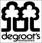
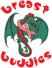

Between May 8 - 16th, the Breast Buddies Dragon Boat team helped sell 512 Invincibelle Spirit Hydrangeas
at Degroot's Nurseries, 1840 London Line, Sarnia.
$10 from each sale was donated by
Degroot's Nursery
 to the  Dragon Boat team. We thank Degroot's Nursery for their generosity!!
Invincibelle Spirit Hydrangea is a reliable bloomer, very hardy, requires
full sun to part shade, is adaptable to most moist, well-drained soils,
is excellent for cutting, and blooms continuously! The flowers emerge a
dark, hot pink colour and mature to a rich clear pink!! To read more information about this hydrangea go to Invincibelle Spirit and click on 'plant'.